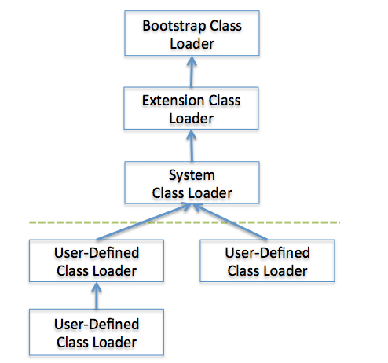
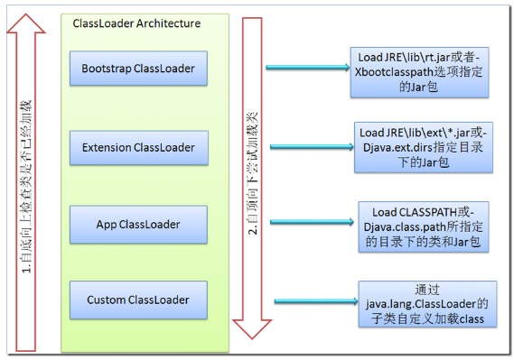

实例参见: -- examples
$ javac [ options ] [ sourcefiles ] [ classes] [ @argfiles ] # options -- 命令行选项 # sourcefiles -- 一个或多个要编译的源文件 # classes -- 一个或多个编译使用的注解类文件 # @argfiles -- 一个或多个对源文件进行列表的文件
-classpath <path>
-- 指定查找用户类文件和注释处理程序的位置
-cp <path>
-- 指定查找用户类文件和注释处理程序的位置
-sourcepath <path>
-- 指定查找输入源文件的位置
-d <dir>
-- 指定放置生成的类文件的位置
-s <dir>
-- 指定放置生成的源文件的位置
-g
-- 生成所有调试信息
-g:non e
-- 不生成任何调试信息
-g:{lines,vars,source}
-- 只生成某些调试信息
-nowarn
-- 不生成任何警告
-verbose
-- 输出有关编译器正在执行的操作的消息
-deprecation
-- 输出使用已过时的 API 的源位置
-bootclasspath <path>
-- 覆盖引导类文件的位置
-extdirs <dir>
-- 覆盖所安装扩展的位置
-endorseddirs <dir>
-- 覆盖签名的标准路径的位置
-proc:{none,only}
-- 控制是否执行注释处理和/或编译。
-processor
<class1>[,<class2>,<class3>...]
-- 要运行的注释处理程序的名称; 绕过默认的搜索进程
-processorpath <path>
-- 指定查找注释处理程序的位置
-implicit:{none,class}
-- 指定是否为隐式引用文件生成类文件
-encoding <encode>
-- 指定源文件使用的字符编码
-source <version>
-- 提供与指定发行版的源兼容性
-target <version>
-- 生成特定 VM 版本的类文件
-version
-- 版本信息
-help
-- 输出标准选项的提要
-Akey[=value]
-- 传递给注释处理程序的选项
-X
-- 输出非标准选项的提要
-J <tag>
-- 直接将 <tag> 传递给运行时系统
-Werror
-- 出现警告时终止编译
实例参见: -- examples
$ java [options] classname [args] $ java [options] -jar filename [args]
Java启动命令可选项(options)大致可分为标准和非标准两种，非标准的可选项不保证在所有平台上都实现，并且未来的版本中可能会被修改且不告知，总之就是不稳定(Unstable)。不过有的非标准可选项还是非常有用的，后面我们会谈到。
-client 与 -server
以clien或者server模式启动，二选一，Java运行时环境会依场景来优化自己的配置策略。值得指出的是64位的Java不支持client模式，默认就是server。不同平台的默认配置可以参考
Server-Class
Machine Detection
-d32 与 -d64
程序运行在32位或者64位环境
-cp 和 -classpath
最重要的可选项之一，指定Java运行时环境搜索class的路径。-cp只是-classpath的简写，做相同的事情，用其中之一即可。多个路径用英文里面的分号分隔。如果-cp和-classpath都没有使用，CLASSPATH环境变量也没用设定，那么就是当前路径(.)。
-Dproperty=value
设定系统属性值，比如编码-Dfile.encoding=UTF-8。可以设定一些系统使用的属性，也可以用来向程序传递值，比如程序的根目录。
可以通过
System.getProperty("keyname")
来获取属性。
-help与-?
都是要求显示帮助信息
-disableassertions[:[packagename]...|:classname]与-da[:[packagename]...|:classname]
禁用断言，可以指定包名(注意包后面的三个点)或者class的名称。默认就是禁用的。da只是disableassertions的缩写，使用方法完全一样。
禁用包:
da:org.slf4j...
禁用类:
da:org.slf4j.LoggerFactory
enableassertions[:packagename...|:classname]与ea[:packagename...|:classname]
启用断言，可以指定包名(注意包后面的三个点)或者class的名称。ea只是enableassertions的缩写，使用方法完全一样。
启用包:
ea:org.slf4j...
启用类:
ea:org.slf4j.LoggerFactory
disablesystemassertions与dsa
禁用系统类(syetem class)断言
enablesystemassertions与esa
启用系统类(syetem class)断言
-version 与 -showversion
这两个都显示Java的版本信息，不过后者会把help的信息也显示出来。
verbose:class, verbose:gc,
"verbose:jni"
verbose:class显示class加载信息，verbose:gc显示Java垃圾回收的信息。verbose:jni显示JNI(Java
Native Interface)信息。
-agentlib:libname[=options]与-agentpath:pathname[=options]
都是加载本地代理库(Native Agent
Library)，-agentlib只需要library的名称，且会根据不同的操作系统转为对应的文件(Windows为DLL)。
-agentpath指定library的绝对路径。
非标准的可选项都以-X开始，其中的部分选项如下:
-X
显示所有非标准选项的信息。看看都有些什么非标准选项吧。
java -X
。
-Xms<size>
设置Java堆的初始化大小。例如
-Xms1024m，Java堆的初始化大小就设置为1G。
-Xmx<size>
设置Java堆的最大值。例如
-Xmx3072m，Java堆的最大值就设置为3G。
-Xss<size>
设置Java线程栈的值。例如
-Xss128m，Java线程栈的值就设置为128兆。
-Xnoclassgc
禁用Java垃圾回收器。
-Xincgc
启用Java增量式垃圾回收器。
-Xmixed
解释模式和编译模式混合执行
-Xint
仅解释模式执行
-Xshare:on，-Xshare:off，-Xshare:auto 设定类数据共享CDS(Class data sharing)是否开启。-Xshare:on要求一定要用共享的类数据；-Xshare:auto表示让系统自己判断 是否有类共享数据，有就用，没有不用；-Xshare:off禁用共享类数据。
-Xcheck:jni
针对JNI函数做额外的检查
不稳定的选项当然是非标准的，都以-XX开头。这一类参数有很多，暂时只列其中的几个:
-XX:PermSize<=size>和-XX:MaxPermSize<=size>
设置Java永久保存区域(Permanent Generation
Space)的大小。PermSize设置初始值，MaxPermSize设置最大值。
该区域主要存储class的信息，且不会被 垃圾回收器回收，如果加载的class过多，就会报错:java.lang.OutOfMemoryError:
PermGen space。 -XX:PermSize=64m
-XX:MaxPermSize=128m，表示Java永久保存区域大小初始化问为64兆，最大为128兆。
-XX:+UseParallelGC
开启并行Java回收器
-XX:+PrintGCDetails
显示比
-verbose:gc
更多更准确的垃圾回收信息
-XX:+TraceClassLoading
显示类加载以及卸载的信息
实例参见: -- examples
# 创建 jar $ jar c[efmMnv0] [entrypoint] [jarfile] [manifest] [-C dir] file ... [-Joption ...] [@arg-file ...] # 更新 jar $ jar u[efmMnv0] [entrypoint] [jarfile] [manifest] [-C dir] file ... [-Joption ...] [@arg-file ...] # 解压 jar $ jar x[vf] [jarfile] file ... [-Joption ...] [@arg-file ...] # 查看 jar 列出 jar 内容 $ jar t[vf] [jarfile] file ... [-Joption ...] [@arg-file ...] # 为 jar 创建索引 $ jar i jarfile [-Joption ...] [@arg-file ...]
$ jar [cuxti][efmMnv0] jarfile [-C dir] [@arg-file ...] # 前面5个参数必先其一 # f 指定jar包路径 # v 生成详细的报造，并输出至标准设备 # m 指定MANIFEST.MF配置文件位置 -M 不产生所有文件的清单文件(Manifest.mf) # 0 产生jar包时不对其中的内容进行压缩处理 # i 为指定的jar文件创建索引文件 # -C 表示转到相应的目录下执行jar命令,相当于cd到那个目录，然后不带-C执行jar命令 # 打成jar包 $ jar cvf build/libs/demo.jar -C build/classes/ cm # 打成jar包, 在这里指定 MANIFEST.MF 配置文件为：config/manifest-config.txt $ jar cvfm build/libs/demo.jar config/manifest-config.txt -C build/classes/ cm # 列出 jar 内容 $ jar tvf build/libs/demo.jar
只有源文件，不引用第三方jar，编译运行，打包：(还没有使用
libs/commons-lang3-3.5.jar
中的
StringUtils
类)
# 编译 java 源代码 $ javac -d build/classes/ \ src/cm/nate/model/Person.java \ src/cm/nate/Main.java # 要编译的源文件太多时，可以写入 res/source-list.txt 文件 $ javac -d build/classes @config/source-list.txt # 直接运行class $ java -cp "build/classes" cm.nate.Main # 打成jar包 $ jar cvf build/libs/demo.jar -C build/classes/ cm # 运行jar包 $ java -cp build/libs/demo.jar cm.nate.Main
源文件引用第三方jar，编译运行，打包：(使用
libs/commons-lang3-3.5.jar
中的
StringUtils
类)
# 编译 java 源代码 $ javac -d build/classes \ -cp libs/commons-lang3-3.5.jar \ @config/source-list.txt # 直接运行class $ java -cp \ "build/classes:libs/commons-lang3-3.5.jar" \ cm.nate.Main # 打成jar包 $ jar cvf build/libs/demo.jar -C build/classes/ cm # 运行jar包 $ java -cp \ build/libs/demo.jar:libs/commons-lang3-3.5.jar \ cm.nate.Main
目录结构如下:
├── build
│ ├── classes
│ │ └── cm
│ │ └── nate
│ │ ├── Main.class
│ │ └── model
│ │ └── Person.class
│ ├── docs
│ └── libs
│ ├── demo.jar
│ └── libs
│ └── commons-lang3-3.5.jar
├── config
│ ├── manifest-config.txt
│ └── source-list.txt
├── libs
│ └── commons-lang3-3.5.jar
└── src
└── cm
└── nate
├── Main.java
└── model
└── Person.java
打包可运行的jar包(在
MANIFEST.MF
文件中指定主类),因为这里引用了第三方的jar，可以使用下面的两种方法：
在
manifest-config.txt
文件中指定
Class-Path(多个jar用空格分割)
和
Main-Class
,注意最后有空行要保留
Class-Path: libs/commons-lang3-3.5.jar Main-Class: cm.nate.Main
要注意的是当前目录下要有
libs/commons-lang3-3.5.jar
# 编译 java 源代码 $ javac -d build/classes -cp libs/commons-lang3-3.5.jar @config/source-list.txt # 直接运行class $ java -cp "build/classes:libs/commons-lang3-3.5.jar" cm.nate.Main # 打成jar包, 在这里指定 MANIFEST.MF 配置文件为：config/manifest-config.txt $ jar cvfm build/libs/demo.jar config/manifest-config.txt -C build/classes/ cm # 运行jar包，能运行是因为在当前目录下有 libs/commons-lang3-3.5.jar存在 $ java -jar build/libs/demo.jar
在
manifest-config.txt
文件中指定
Main-Class
,注意最后有空行要保留
Main-Class: cm.nate.Main
要注意的是要解析依赖的jar包，然后打包的时候一起打包进去
# 编译 java 源代码 $ javac -d build/classes -cp libs/commons-lang3-3.5.jar @config/source-list.txt # 直接运行class $ java -cp "build/classes:libs/commons-lang3-3.5.jar" cm.nate.Main # 将依赖的jar 解压到 build/classes 目录下,下一步一起打包成自己的jar $ unzip libs/commons-lang3-3.5.jar -d build/classes # 打成jar包, 在这里指定 MANIFEST.MF 配置文件为：config/manifest-config.txt $ jar cvf build/libs/demo.jar config/manifest-config.txt \ -C build/classes/ cm -C build/classes org # 运行jar包，能运行是因为依赖的jar包，所有的class被一起打包到 demo.jar中了 $ java -jar build/libs/demo.jar
类的加载过程指通过一个类的全限定名来获取描述此类的二进制字节流，并将其转化为方法区的数据结构，进而生成一个java.lang.Class对象作为方法区这个类各种数据访问的入口。这个过程通过Java中的类加载器(ClassLoader)来完成。
类装载器是用来把类(class)装载进JVM的。JVM规范定义了两种类型的类装载器：启动内装载器(bootstrap)和用户自定义装载器(user-defined class loader)。
一、Java默认提供的三个ClassLoader
JVM在运行时会产生三个ClassLoader:Bootstrap ClassLoader、Extension ClassLoader和AppClassLoader（System ClassLoader）。
1、 Bootstrap ClassLoader（启动类加载器）负责将%JAVA_HOME%/lib目录中或-Xbootclasspath中参数指定的路径中的，并且是虚拟机识别的（按名称）类库加载到JVM中。
也可以通过-Xbootclasspath参数定义。该ClassLoader不能被Java代码实例化，因为它是JVM本身的一部分。
2、Extension ClassLoader（扩展类加载器）负责加载%JAVA_HOME%/lib/ext中的所有类库;
只要jar包放置这个位置，就会被虚拟机加载。一个常见的、类似的问题是，你将mysql的低版本驱动不小心放置在这儿，但你的Web应用程序的lib下有一个新的jdbc驱动，但怎么都报错，譬如不支持JDBC2.0的 DataSource，这时你就要当心你的新jdbc可能并没有被加载。这就是ClassLoader的delegate现象。常见的有log4j、 common-log、dbcp会出现问题，因为它们很容易被人塞到这个ext目录，或是Tomcat下的common/lib目录
3、Application ClassLoader：也称为System ClassLoaer（加载%CLASSPATH%路径的类库）以及其它自定义的ClassLoader。缺省情况下，它是用户创建的任何ClassLoader的父ClassLoader。
我们创建的standalone应用的main class缺省情况下也是由它加载(通过Thread.currentThread().getContextClassLoader()查看)。实际开发中用ClassLoader更多时候是用其加载classpath下的资源，特别是配置文件，如ClassLoader.getResource()，比FileInputStream直接。
类加载器 classloader 是具有层次结构的，也就是父子关系。其中，Bootstrap 是所有类加载器的父亲。如下图所示：

注意： 除了Java默认提供的三个ClassLoader之外，用户还可以根据需要定义自已的ClassLoader，而这些自定义的ClassLoader都必须继承自java.lang.ClassLoader类，也包括Java提供的另外二个ClassLoader（Extension ClassLoader和App ClassLoader）在内，但是Bootstrap ClassLoader不继承自ClassLoader，因为它不是一个普通的Java类，底层由C++编写，已嵌入到了JVM内核当中，当JVM启动后，Bootstrap ClassLoader也随着启动，负责加载完核心类库后，并构造Extension ClassLoader和App ClassLoader类加载器。
二、双亲委托模型
Java中ClassLoader的加载采用了双亲委托机制，采用双亲委托机制加载类的时候采用如下的几个步骤：
1、当前ClassLoader首先从自己已经加载的类中查询是否此类已经加载，如果已经加载则直接返回原来已经加载的类；
每个类加载器都有自己的加载缓存，当一个类被加载后就放入缓存，当下次加载时就可以直接返回了。
2、当前classLoader的缓存中没有找到被加载的类的时候，委托父类加载器去加载，父类加载器采用同样的策略，首先查看自己的缓存，然后委托父类的父类去加载，一直到bootstrp ClassLoader.
3、当所有的父类加载器都没有加载的时候，再由当前的类加载器加载，并将其放入它自己的缓存中，以便下次有加载请求的时候直接返回。
JVM中类加载的机制——双亲委派模型。这个模型要求除了Bootstrap ClassLoader外，其余的类加载器都要有自己的父加载器。子加载器通过组合来复用父加载器的代码，而不是使用继承。在某个类加载器加载class文件时，它首先委托父加载器去加载这个类，依次传递到顶层类加载器(Bootstrap)。如果顶层加载不了（它的搜索范围中找不到此类），子加载器才会尝试加载这个类。
当JVM请求某个ClassLoader实例使用这种模型来加载某个类时，首先检查该类是否已经被当前类加载器加载，如果没有被加载，则先委托给她的父类加载器即调用parent.loadClass()方法，这样一直请求调用到请求顶层类加载ClassLoader#findBootStrapClassOrNull,如果这个方法依然加载不了，则会调用ClassLoader#findClass()方法，这个方法再找不到则会抛出ClassNotFoundException异常，但是这里的异常会被捕获，然后返回给委托发起者，最后由当前类加载器的findClass()方法类加载类，如果找不到则抛出ClassNotFoundException异常。
Class查找的位置和顺序依次是：Cache、parent、self
三、ClassLoader加载类的原理
ClassLoader使用的是双亲委托模型来搜索类的，每个ClassLoader实例都有一个父类加载器的引用（不是继承的关系，是一个包含的关系），虚拟机内置的类加载器（Bootstrap ClassLoader）本身没有父类加载器，但可以用作其它ClassLoader实例的的父类加载器。当一个ClassLoader实例需要加载某个类时，它会试图亲自搜索某个类之前，先把这个任务委托给它的父类加载器，这个过程是由上至下依次检查的，首先由最顶层的类加载器Bootstrap ClassLoader试图加载，如果没加载到，则把任务转交给Extension ClassLoader试图加载，如果也没加载到，则转交给App ClassLoader 进行加载，如果它也没有加载得到的话，则返回给委托的发起者，由它到指定的文件系统或网络等URL中加载该类。如果它们都没有加载到这个类时，则抛出ClassNotFoundException异常。否则将这个找到的类生成一个类的定义，并将它加载到内存当中，最后返回这个类在内存中的Class实例对象。
因为这样可以避免重复加载，当父亲已经加载了该类的时候，就没有必要子ClassLoader再加载一次。考虑到安全因素，我们试想一下，如果不使用这种委托模式，那我们就可以随时使用自定义的String来动态替代java核心api中定义的类型，这样会存在非常大的安全隐患，而双亲委托的方式，就可以避免这种情况，因为String已经在启动时就被引导类加载器（Bootstrcp ClassLoader）加载，所以用户自定义的ClassLoader永远也无法加载一个自己写的String，除非你改变JDK中ClassLoader搜索类的默认算法。
JVM在判定两个class是否相同时，不仅要判断两个类名是否相同，而且要判断是否由同一个类加载器实例加载的。只有两者同时满足的情况下，JVM才认为这两个class是相同的。就算两个class是同一份class字节码，如果被两个不同的ClassLoader实例所加载，JVM也会认为它们是两个不同class。
比如网络上的一个Java类org.classloader.simple.NetClassLoaderSimple，javac编译之后生成字节码文件NetClassLoaderSimple.class，ClassLoaderA和ClassLoaderB这两个类加载器并读取了NetClassLoaderSimple.class文件，并分别定义出了java.lang.Class实例来表示这个类，对于JVM来说，它们是两个不同的实例对象，但它们确实是同一份字节码文件，如果试图将这个Class实例生成具体的对象进行转换时，就会抛运行时异常java.lang.ClassCaseException，提示这是两个不同的类型。
在一个单虚拟机环境下，标识一个类有两个因素：class的全路径名、该类的ClassLoader。

四、自定义ClassLoader
为什么我们需要自定义类加载？
主要原因：1、需要加载外部的Class,JVM提供的默认ClassLoader只能加载指定目录下的.jar和.class,如果我们想加载其它位置的class或者jar时，这些默认的类加载器是加载不到的（如果是文件格式必须配置到classpath）。例如：我们需要加载网络上的一个class字节流；
2、需要实现Class的隔离性。目前我们常用的Web服务器，如tomcat、jetty都实现了自己定义的类加载，这些类加载主要完成以下三个功能：
如何自定义类加载？
反射机制是在运行状态中，对于任意一个类，都能够知道这个类的所有属性和方法；对于任意一个对象，都能够调用它的任意一个方法和属性；这种动态获取的信息以及动态调用对象的方法的功能称为java语言的反射机制。
反射机制主要提供了以下功能：
public class MyReflect {
public static void main(String[] args) {
MyReflect testReflect = new MyReflect();
Class<?> clazz = testReflect.getClass();
System.out.println("完整类名: " + clazz.getName());
System.out.println("类名: " + clazz.getSimpleName());
System.out.println("类型名: " + clazz.getTypeName());
System.out.println("ClassLoader名: "
+ clazz.getClassLoader().getClass().getName());
System.out.println("父类: " + clazz.getSuperclass().getName());
/** 实例化一个对象，并操作这个对象 */
try {
// 第一种方法，实例化默认构造方法，调用set赋值
Class<?> myClass = Class.forName("cm.nate.reflect.MyReflect");
MyReflect mr = (MyReflect) myClass.newInstance();
mr.setName("hello");
System.out.println(mr.getName());
// 取得指定的构造函数 使用构造函数赋值
@SuppressWarnings("unchecked")
Constructor<MyReflect> constructor =
(Constructor<MyReflect>) myClass.getConstructor(String.class);
MyReflect mr2 = constructor.newInstance("jiwanger");
System.out.println(mr2.getName());
} catch (Exception e) {
e.printStackTrace();
}
/** 取得本类的全部属性 */
Field[] field = clazz.getDeclaredFields();
for (int i = 0; i < field.length; i++) {
// 权限修饰符
int mo = field[i].getModifiers();
String priv = Modifier.toString(mo);
// 属性类型
Class<?> type = field[i].getType();
System.out.println(priv + " " + type.getName() + " " + field[i].getName() + ";");
}
/** 获取某个类的全部方法 */
Method method[] = clazz.getMethods();
for (int i = 0; i < method.length; ++i) {
Class<?> returnType = method[i].getReturnType();
Class<?> para[] = method[i].getParameterTypes();
int temp = method[i].getModifiers();
System.out.print(Modifier.toString(temp) + " ");
System.out.print(returnType.getName() + " ");
System.out.print(method[i].getName() + " ");
System.out.print("(");
for (int j = 0; j < para.length; ++j) {
System.out.print(para[j].getName() + " " + "arg" + j);
if (j < para.length - 1) {
System.out.print(",");
}
}
Class<?> exce[] = method[i].getExceptionTypes();
if (exce.length > 0) {
System.out.print(") throws ");
for (int k = 0; k < exce.length; ++k) {
System.out.print(exce[k].getName() + " ");
if (k < exce.length - 1) {
System.out.print(",");
}
}
} else {
System.out.print(")");
}
System.out.println();
}
/** 反射机制调用某个类的方法 */
try {
Class<?> myClass = Class.forName("cm.nate.reflect.MyReflect");
// 调用TestReflect类中的reflect1方法
// Java 反射机制 - 调用某个类的方法1.
// 调用TestReflect的reflect2方法
MyReflect mr3 = (MyReflect) myClass.newInstance();
Method method2 = myClass.getMethod("setName", String.class);
method2.invoke(mr3, "张三");
Method method3 = myClass.getMethod("getName");
String name = (String) method3.invoke(mr3);
System.out.println(name);
} catch (Exception e) {
// TODO Auto-generated catch block
e.printStackTrace();
}
}
public MyReflect(){}
public MyReflect(String name){
this.name = name;
}
private String name;
public String getName() {
return name;
}
public void setName(String name) {
this.name = name;
}
}
Java注解是附加在代码中的一些元信息，用于编译和运行时进行解析和使用，起到说明、配置的功能。注解不会影响代码的实际逻辑，仅仅起到辅助性的作用。包含在java.lang.annotation包中。注解的定义类似于接口的定义，使用@interface来定义，定义一个方法即为注解类型定义了一个元素，方法的声明不允许有参数或throw语句，返回值类型被限定为原始数据类型、字符串String、Class、enums、注解类型，或前面这些的数组，方法可以有默认值。注解并不直接影响代码的语义，但是他可以被看做是程序的工具或者类库。它会反过来对正在运行的程序语义有所影响。注解可以从源文件、class文件或者在运行时通过反射机制多种方式被读取。
Java元注解 -- 元注解是指注解的注解。包括 @Retention @Target @Document @Inherited四种。
| 注解 | 说明 |
|---|---|
| @Target | 定义注解的作用目标 |
| @Retention | 定义注解的保留策略。RetentionPolicy.SOURCE:注解仅存在于源码中，在class字节码文件中不包含；RetentionPolicy.CLASS:默认的保留策略，注解会在class字节码文件中存在，但运行时无法获得;RetentionPolicy.RUNTIME:注解会在class字节码文件中存在，在运行时可以通过反射获取到。 |
| @Document | 说明该注解将被包含在javadoc中 |
| @Inherited | 说明子类可以继承父类中的该注解 |
| Target类型 | 说明 |
|---|---|
| ElementType.TYPE | 接口、类、枚举、注解 |
| ElementType.FIELD | 字段、枚举的常量 |
| ElementType.METHOD | 方法 |
| ElementType.PARAMETER | 方法参数 |
| ElementType.CONSTRUCTOR | 构造函数 |
| ElementType.LOCAL_VARIABLE | 局部变量 |
| ElementType.ANNOTATION_TYPE | 注解 |
| ElementType.PACKAGE | 包 |
example
定义: FruitColor, FruitName, FruitProvider 三个注解类
/** 水果颜色注解 */
@Target(ElementType.FIELD)
@Retention(RetentionPolicy.RUNTIME)
@Documented
public @interface FruitColor {
/** 颜色枚举 */
public enum Color {
BULE, RED, GREEN
};
/** 颜色属性 */
Color fruitColor() default Color.GREEN;
}
/** 水果名称注解 */
@Target(ElementType.FIELD)
@Retention(RetentionPolicy.RUNTIME)
@Documented
public @interface FruitName {
String value() default "";
}
/** 水果供应者注解 */
@Target(ElementType.FIELD)
@Retention(RetentionPolicy.RUNTIME)
@Documented
public @interface FruitProvider {
/** 供应商编号 */
public int id() default -1;
/** 供应商名称 */
public String name() default "";
/** 供应商地址 */
public String address() default "";
}
注解使用: Apple
public class Apple {
@FruitName("Apple")
private String appleName;
@FruitColor(fruitColor = Color.RED)
private String appleColor;
@FruitProvider(id = 1, name = "陕西红富士集团", address = "陕西省西安市延安路89号红富士大厦")
private String appleProvider;
public void setAppleColor(String appleColor) {
this.appleColor = appleColor;
}
public String getAppleColor() {
return appleColor;
}
public void setAppleName(String appleName) {
this.appleName = appleName;
}
public String getAppleName() {
return appleName;
}
public void setAppleProvider(String appleProvider) {
this.appleProvider = appleProvider;
}
public String getAppleProvider() {
return appleProvider;
}
public void displayName() {
System.out.println("水果的名字是：苹果");
}
}
注解处理器: FruitInfoUtil
public class FruitInfoUtil {
public static void getFruitInfo(Class clazz) {
String strFruitName = " 水果名称：";
String strFruitColor = " 水果颜色：";
String strFruitProvicer = "供应商信息：";
Field[] fields = clazz.getDeclaredFields();
for (Field field : fields) {
if (field.isAnnotationPresent(FruitName.class)) {
FruitName fruitName = (FruitName) field
.getAnnotation(FruitName.class);
strFruitName = strFruitName + fruitName.value();
System.out.println(strFruitName);
} else if (field.isAnnotationPresent(FruitColor.class)) {
FruitColor fruitColor = (FruitColor) field
.getAnnotation(FruitColor.class);
strFruitColor = strFruitColor
+ fruitColor.fruitColor().toString();
System.out.println(strFruitColor);
} else if (field.isAnnotationPresent(FruitProvider.class)) {
FruitProvider fruitProvider = (FruitProvider) field
.getAnnotation(FruitProvider.class);
strFruitProvicer = " 供应商编号：" + fruitProvider.id() + " 供应商名称："
+ fruitProvider.name() + " 供应商地址："
+ fruitProvider.address();
System.out.println(strFruitProvicer);
}
}
}
public static void main(String[] args) {
getFruitInfo(Apple.class);
}
}